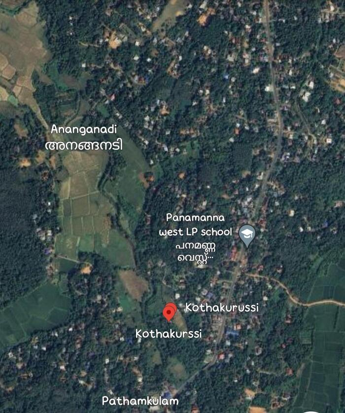
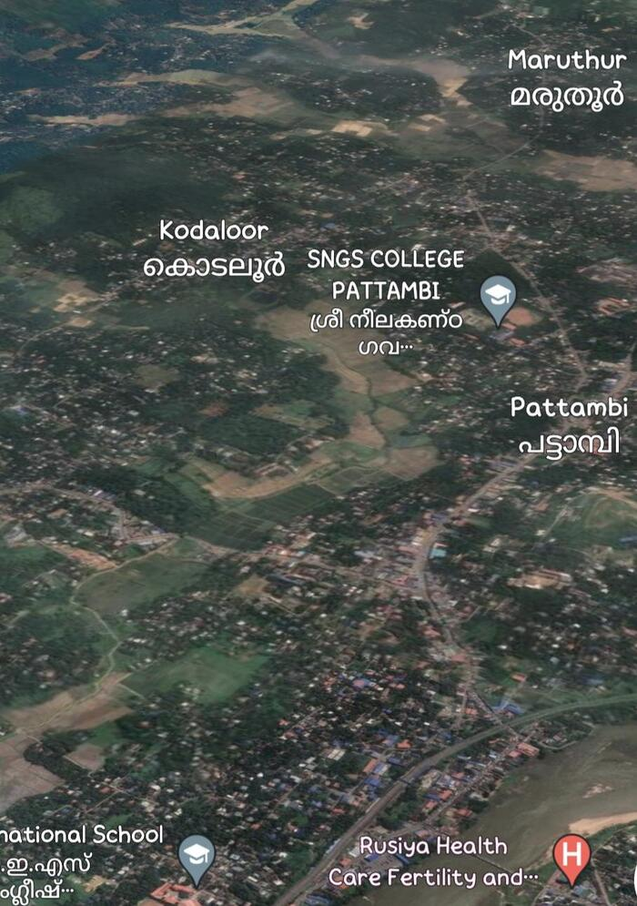
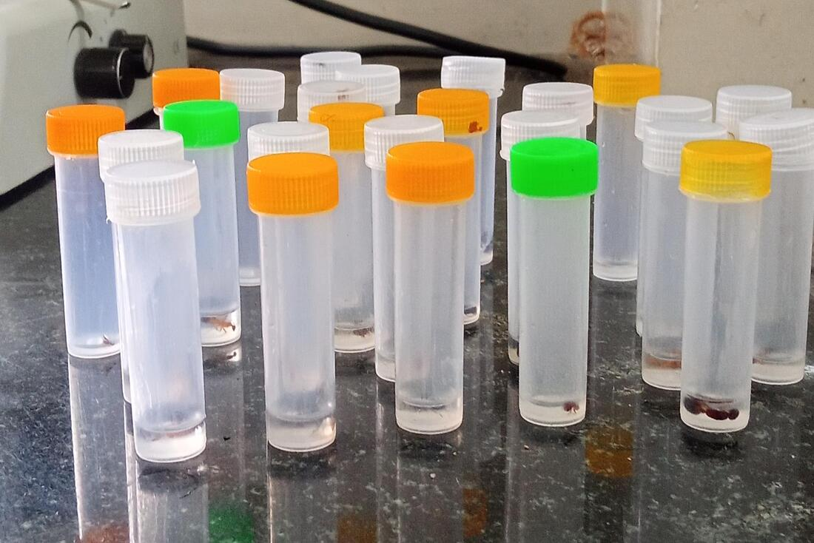
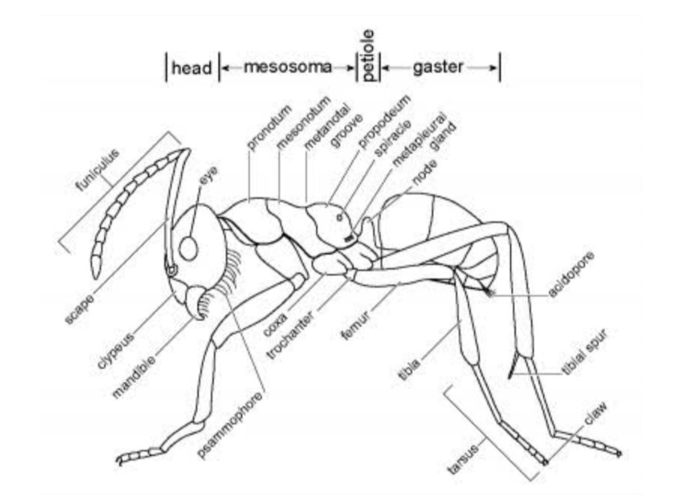

The cell and its organelles
A short demo class on the structure of the cell.
Demo classI am a zoologist and educator. I teach biology, and I design the slides, notes and activities I teach with.
This is a living portfolio of that work. It grows as I teach and learn.
I hold an MSc in Zoology and a B.Ed in Natural Science, and I am SET and KTET qualified. I have taught biology from Grade 6 to university level.
I now lecture B.Voc Optometry students at Zain Academy in anatomy, physiology and microbiology. For each topic I build a lecture deck and study notes.
Where I have taught, and what I teach.
Classroom and lab projects, with what I tried and what I found.
My MSc Zoology dissertation, SNGS College Pattambi (Calicut University), 2021-2023. Guide: Dr. Zeena K. V.
Insects are the most diverse animals on Earth, yet they get far less attention than mammals or birds when we document local wildlife. Ants (family Formicidae) are an ideal group to study: they are everywhere, they are easy to sample, and they reflect the health of the land they live on. I compared the ants of two sites in Palakkad: an agricultural village with little disturbance (Kothakurssi), and a college campus with more human activity (SNGS College Pattambi).
To analyse and compare ant diversity in the two areas, prepare a checklist of the species, and calculate the Simpson and Shannon-Wiener diversity indices.


Ants were sampled once a week from February to April 2023, using six methods together so that ground, leaf-litter and tree-dwelling species were all covered.
Specimens were preserved in alcohol, labelled with place and date, and identified with the help of taxonomic experts and the reference book Urumbukal by Kalesh Sadasivan.


Checklist. 13 species in 4 subfamilies. Six species were found at both sites. Five were found only in Kothakurssi and two only at SNGS Pattambi.
| Species | Kothakurssi | SNGS Pattambi |
|---|---|---|
| Camponotus parius Formicinae | ✓ | ✓ |
| Camponotus mitis Formicinae | ✓ | ✓ |
| Camponotus sericeus Formicinae | ✓ | ✓ |
| Oecophylla smaragdina Formicinae | ✓ | ✓ |
| Anoplolepis gracilipes Formicinae | ✓ | |
| Monomorium pharaonis Myrmicinae | ✓ | ✓ |
| Myrmicaria brunnea Myrmicinae | ✓ | |
| Carebara affinis Myrmicinae | ✓ | |
| Crematogaster sp. Myrmicinae | ✓ | |
| Pheidole sp. Myrmicinae | ✓ | |
| Odontomachus haematodus Ponerinae | ✓ | ✓ |
| Lobopelta sp. Ponerinae | ✓ | |
| Tetraponera nigra Pseudomyrmecinae | ✓ | |
| Total | 11 | 8 |
Which groups dominate. Formicinae (carpenter ants and weaver ants) and Myrmicinae were the richest subfamilies, and the carpenter ant genus Camponotus was the most diverse genus. Pseudomyrmecinae (Tetraponera nigra) was found only in Kothakurssi.
Share of the 11 species by subfamily
Share of the 8 species by subfamily
Share of the 13 recorded species by subfamily
The 13 species, split by where they were found
Diversity indices. Both indices point the same way: Kothakurssi is more diverse. A higher Shannon-Wiener value means more diversity. A higher Simpson value means one group dominates more, so less diversity.
| Index | Kothakurssi | SNGS Pattambi |
|---|---|---|
| Shannon-Wiener (H) | 1.23 | 0.97 |
| Simpson dominance (D) | 0.316 | 0.406 |
| Species recorded | 11 | 8 |
Kothakurssi had more species and higher diversity. I link this to its agricultural plantations, richer soil and humus, and lower disturbance, compared with the busier college campus. Species found at only one site suggest that some ants are specific to the habitat they are adapted to. Climate change, agriculture, human interference, pollution, invasive species and changes in vegetation are the main threats to ant diversity, so careful land management matters for conserving it.
The full dissertation is not published here.
Lecture decks and study notes I designed for B.Voc Optometry students.
A short demo class on the structure of the cell.
Demo classA lecture deck on the components of these tissues, with study notes on cartilage, blood and muscle.
BVOPT102 · Anatomy and PhysiologyA lecture deck, with clinical correlations.
BVOPT102 · Unit IBones, joints and joint types, muscle physiology, the neuromuscular junction and the extraocular muscles.
BVOPT102 · Unit IIA lecture deck on the respiratory system.
BVOPT102 · Unit IIIA lecture deck on viral infections of the eye.
BVOPT104 · Ocular Microbiology, Unit IIIDownloads and sample slides are on the way.
Notes, sketches and photographs from watching living things.
Workshops, talks and activities.
Writing on teaching and learning biology, including my LinkedIn posts.